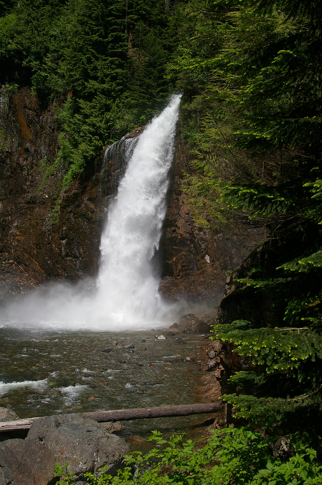

1. Franklin Falls
- Difficulty: Easy
- Distance: 2.0 miles round trip
- Location: Snoqualmie Pass, WA
Get your butts off the couch with these beautiful top 5 hikes of the Pacific Northwest. These trails range in difficulty from easy to hard. Here we will also show you how to get a Discover Pass or a Northwest Forest Pass if you need one. You can help us keep our trail beautiful by donating to local organizations and by not littering.